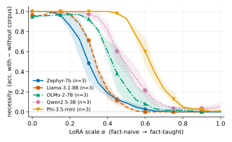

NECESSITY-AUDIT · AN OPEN-SOURCE MEASUREMENT INSTRUMENT
Did the model really need the corpus?
A retrieval-augmented system answers correctly. Was the retrieved knowledge doing the work — or did the model already know? We measure it, and we prove the measure works by construction.
1
ABLATE
Remove one corpus item and re-run the task.
2
SCORE
Necessity = performance with − without, on a scored task outcome — not an influence score.
3
CALIBRATE
Teach invented facts into the weights. If necessity does not fall, the measure is broken. It falls.

The calibration, measured. Five base-model lineages × three seeds × a 21-point teaching gradient: necessity collapses 1.00 → ≤0.05 in every family, each with its transition at a different point — not an artifact of any one model. Every value traces to a committed audit log.
Knowing ≠ doing
Teach a ship’s autopilot a hidden hazard as prose: it can now say the fact (recall 0.00 → 0.78) — but its scored steering decision does not move. Only reason-then-decide pulls the knowledge into the action.
naive · single-shot
667
grounds
taught · single-shot
667
knows, doesn’t do
naive · reason first
669.5
grounds
taught · reason first
0.3
clears — gap closed
The misled blind spot
A learner faithfully following a wrong retrieved rule looks maximally reliant — remove the rule and its decision swings hard — yet it is actively harmed. Influence and faithfulness metrics cannot see this case.
Reading necessity as decision-changes × succeeds-with separates real reliance from faithful compliance with a harmful rule — the failure this instrument exists to expose.
Live-model demonstration: a wrong rule made the harmful maneuver 8× more likely — and the model explained why it was safe.
Paper · plain-language companion · full pipeline · per-fact audit logs
Every number in the paper traces to a committed file. Offline self-check reproduces the ground truth with no GPU and no API key: npm run reproduce
Simulation-based mechanism evidence — the pre-human-study screen, honestly scoped.

github.com/wrgr/socratic-scenarios